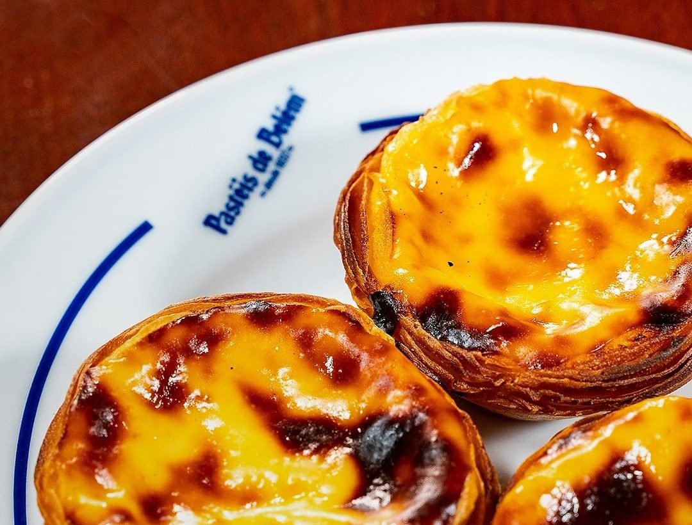
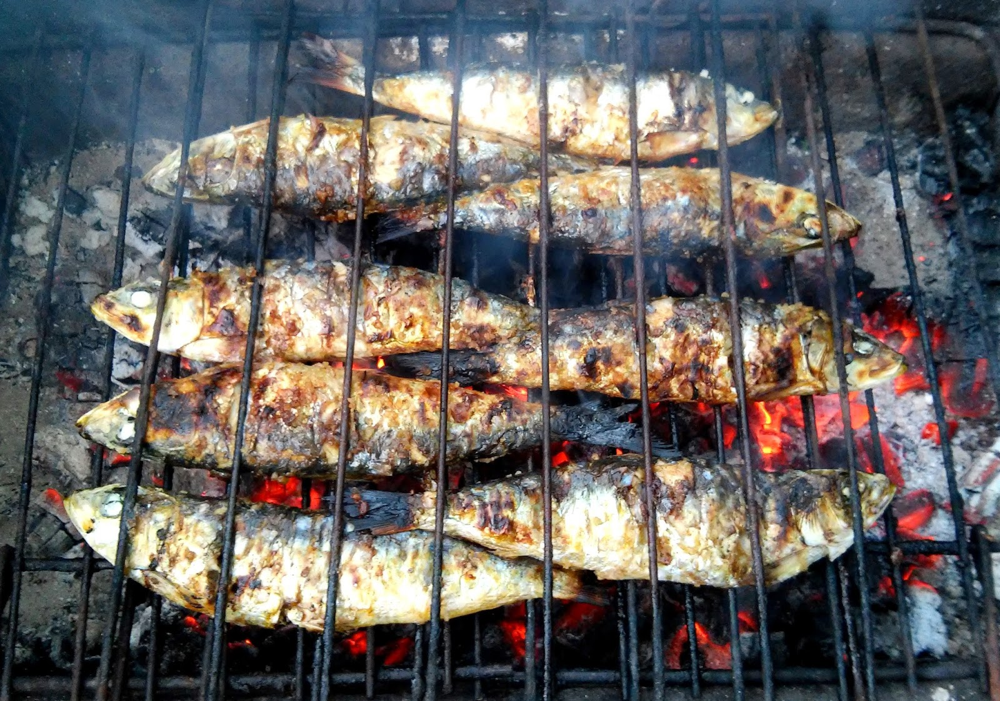
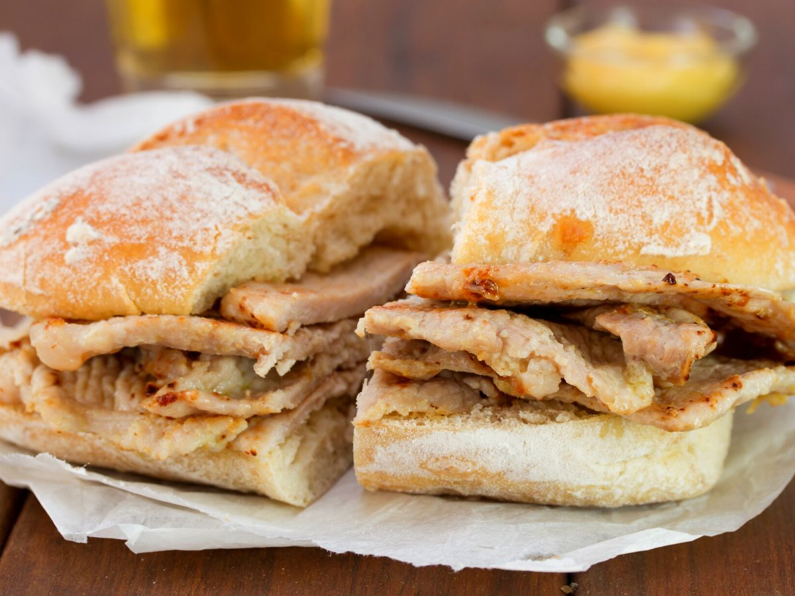

Pastéis de Nata
O doce mais famoso de Lisboa

Bacalhau à Brás
Um clássico português feito com bacalhau desfiado

Sardinha Assada
Especialidade dos Santos Populares em Junho

Bifana
A sandes de carne que todos adoram